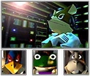
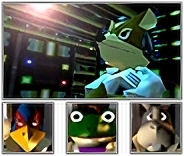

Presione START
©1997 Nintendo
Presione START
©1997 Nintendo
 

El malvado Andross, desterrado al planeta Venom tras sus experimentos prohibidos, ha regresado para sembrar el caos en el sistema Lylat.
Tras la traición de Pigma Dengar y la caída de James McCloud, un nuevo escuadrón Star Fox ha nacido.
Fox McCloud, junto a Falco Lombardi, Slippy Toad y Peppy Hare, son la última esperanza para defender Corneria y liberar a todo Lylat de las garras de Andross.
¡Pilota tu Arwing y únete a la batalla por el futuro del sistema estelar!


Líder del equipo Star Fox e hijo del legendario James McCloud. Piloto experto, decidido a vengar la caída de su padre y salvar al sistema Lylat.


El mejor tirador del equipo. Orgulloso y competitivo, pero un aliado invaluable en las batallas más intensas.

El ingeniero del equipo, responsable de muchas de las armas y mejoras. Aunque torpe en combate, su ingenio es vital.

Veterano del Star Fox original. Mentor de Fox, con la experiencia necesaria para guiar al equipo en los momentos más críticos.

El androide asistente encargado de mantener la nave nodriza, el Great Fox. Provee soporte logístico y táctico al equipo Star Fox.